You will see the phpMyAdmin GUI tool.


Estimated time needed: 20 minutes
In this lab, you will learn how to create tables and load data in the MySQL database service using the phpMyAdmin graphical user interface (GUI) tool.
In this lab, you will use MySQL. MySQL is a Relational Database Management System (RDBMS) designed to efficiently store, manipulate, and retrieve data.

To complete this lab you will utilize MySQL relational database service available as part of IBM Skills Network Labs (SN Labs) Cloud IDE. SN Labs is a virtual lab environment used in this course.
Books database has been used in this lab.
The following diagram shows the structure of the myauthors table from the Books database:
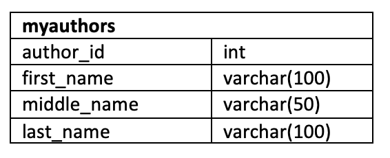In the table, author_id is an integer, first_name is a string that stores a maximum of 100 characters, middle_name is a string that stores a maximum of 50 characters, and last_name is a string that stores a maximum of 100 characters.
After completing this lab, you will be able to use phpMyAdmin with MySQL to:
In this exercise through different tasks, you will learn how to create tables and load data in the MySQL database service using the phpMyAdmin graphical user interface (GUI) tool.
Go to Terminal > New Terminal to open a terminal from the side by side launched Cloud IDE.
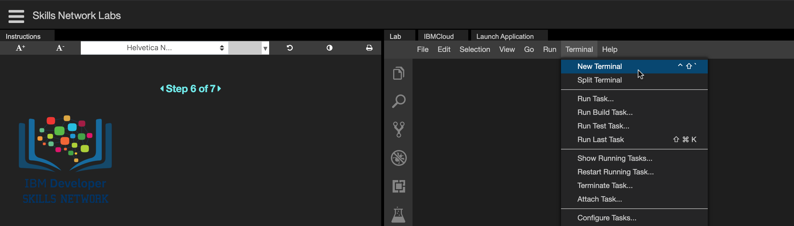
Start MySQL service session in the Cloud IDE using the command below in the terminal. Find your MySQL service session password from the highlighted location of the terminal shown in the image below. Note down your MySQL service session password because you may need to use it later in the lab.
ebnf
start_mysql
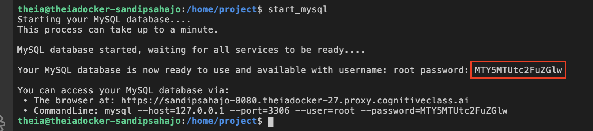
Copy your phpMyAdmin weblink from the highlighted location of the terminal shown in the image below. Past it into the address bar in a new tab of your web browser. This will open the phpMyAdmin tool.
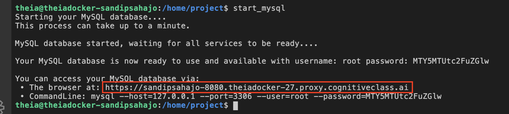
You will see the phpMyAdmin GUI tool.
In the tree-view, click New to create a new empty database. Then enter Books as the name of the database and click Create.
The encoding will be left as utf8mb4_0900_ai_ci. UTF-8 is the most commonly used character encoding for content or data.
Proceed to Task B.
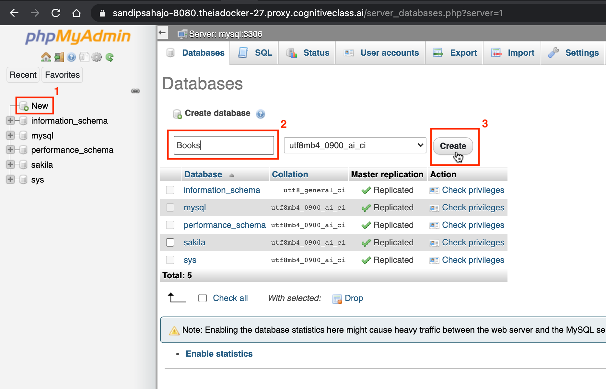
In the Create table interface for the empty database Books, enter myauthors as the table name and 4 for the Number of columns. This is the first step to creating the table myauthors that was shown earlier in this lab.
Then click Go.
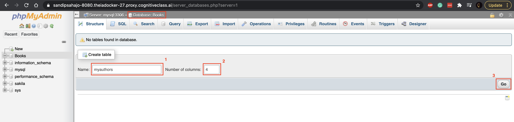
Enter the table definition for the myauthors table as shown in the image below with highlighted boxes. Then click Save.
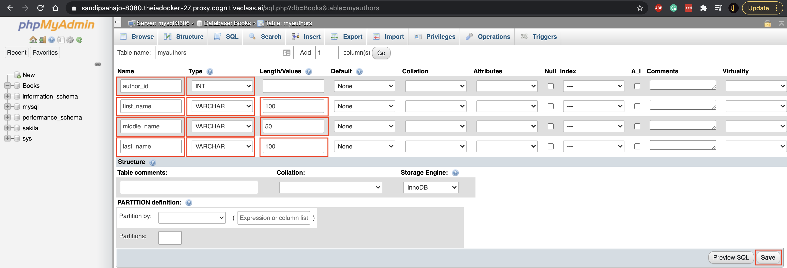
The Table structure for the myauthors table will appear. Proceed to Task C.
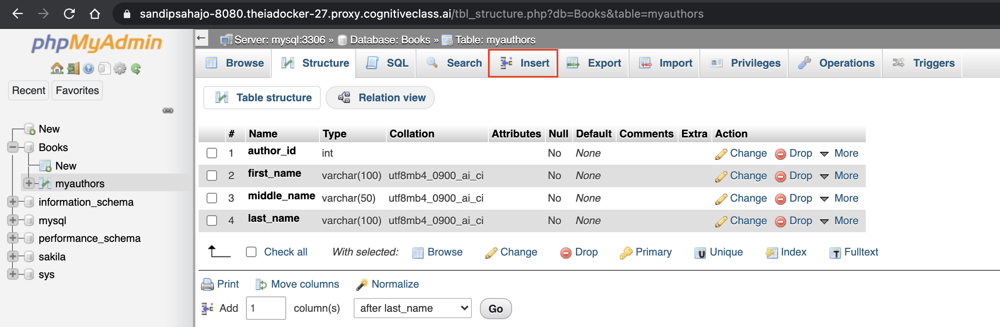
Sometimes, you may want to load a few data rows of data, but you may not have a SQL script on hand to do that. In this case, you can manually load the data into phpMyAdmin. Since this is a manual process, it is better for inserting a small amount of data rather than a large amount.
To load data manually, go to the Insert tab for the myauthors table. Enter data for 2 rows of the myauthors table as shown in the image below with highlighted boxes. Then click Go at the bottom.
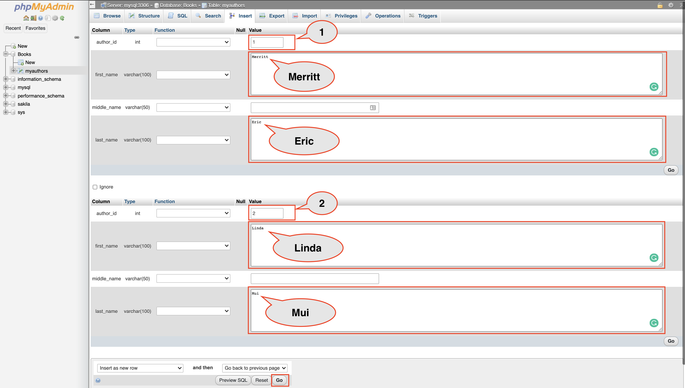
Notification of the successful insertion of 2 rows to the myauthors table will appear.
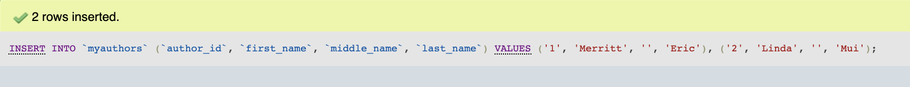
Go to the Browse tab for the myauthors table to check the newly inserted rows. Proceed to Task D.
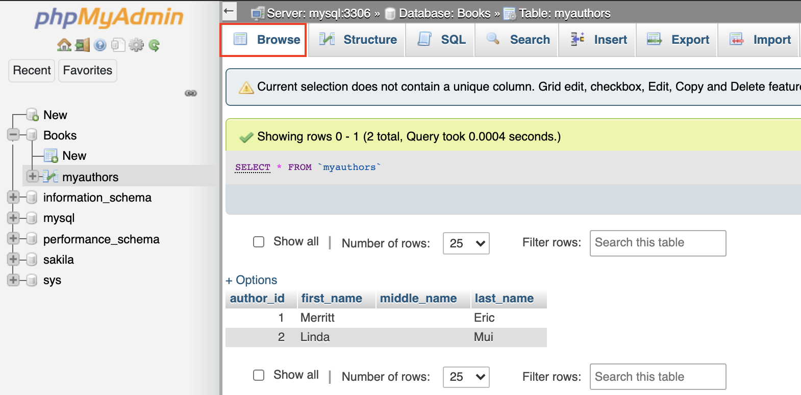
Now you will use a SQL script to import the remainder of the myauthors table data. A SQL script file contains commands and statements that perform operations on your database, and can be useful when importing a large amount of data.
Download the SQL script below to your local computer:
Go to Import tab for the myauthors table. Click Choose File and load the mysql_table-myauthors_insert-data.sql file from your local computer storage. The rest of the settings can be left as they are because you are importing a SQL script that is encoded with UTF-8.
Then click Go. Notification of import success will appear.
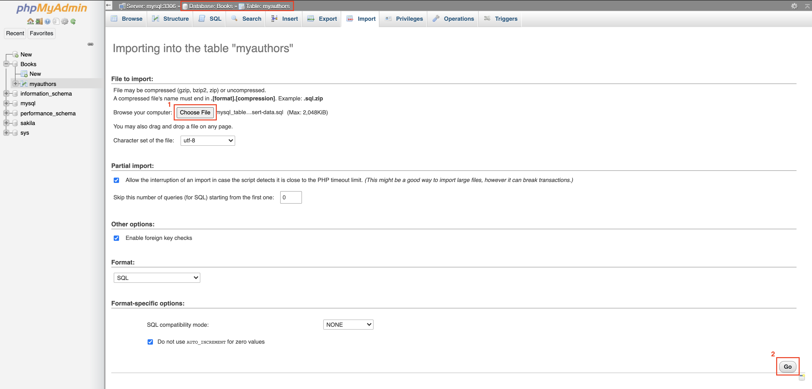
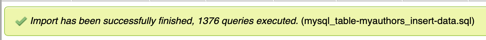
Go to the Browse tab for the myauthors table again to check the newly inserted rows appear along with previously inserted 2 rows.
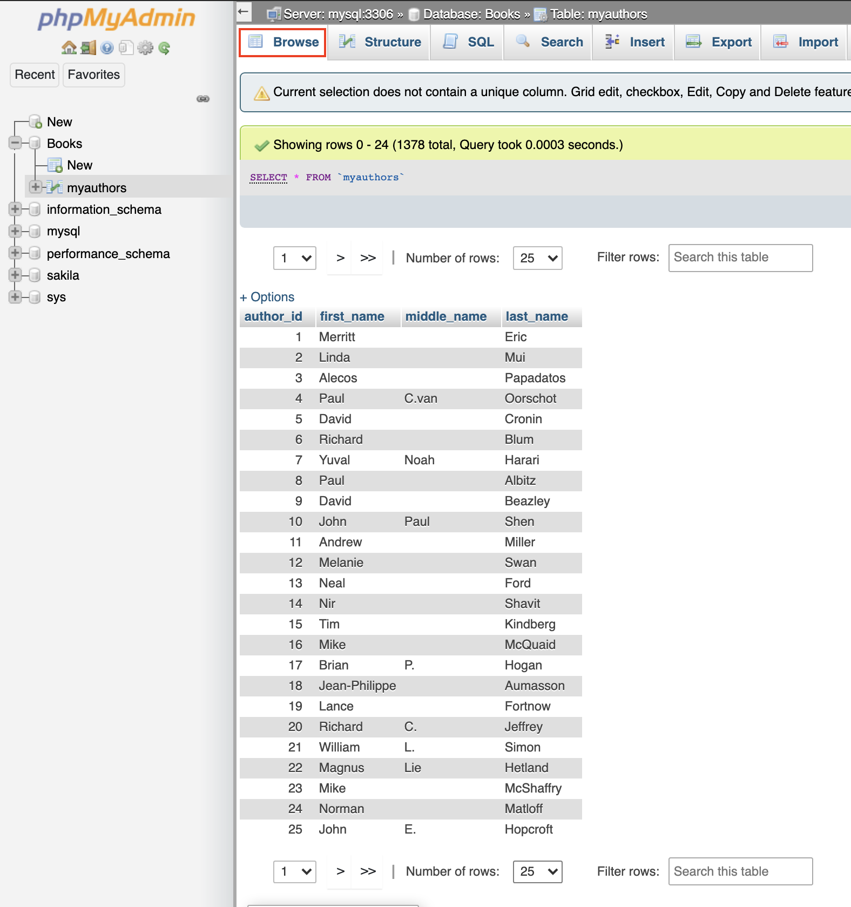
| Date | Version | Changed by | Change Description |
|---|---|---|---|
| 2021-03-15 | 1.0 | Sandip Saha Joy | Created initial version |
| 2021-10-18 | 1.1 | Kathy An | Updated lab instructions |